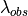
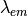
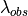
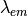
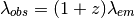
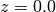
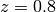

5. Regression: Photometric Redshifts of Galaxies¶
Another important learning task in astronomy is the problem of determining redshifts of distant galaxies. In the current standard cosmological model, the universe began nearly 14 billion years ago, in an explosive event commonly known as the Big Bang. Since then, the very fabric of space has been expanding, so that distant galaxies appear to be moving away from us at very high speeds. The uniformity of this expansion means that there is a relationship between the distance to a galaxy, and the speed that it appears to be receeding from us (this relationship is known as Hubble’s Law, named after Edwin Hubble). This recession speed leads to a shift in the frequency of photons, very similar to the more familiar doppler shift that causes the pitch of a siren to change as an emergency vehicle passes by. If a galaxy or star were moving toward us, its light would be shifted to higher frequencies, or blue-shifted. Because the universe is expanding away from us, distant galaxies appear to be red-shifted: their photons are shifted to lower frequencies.
In cosmology, the redshift is measured with the parameter  , defined
in terms of the observed wavelength  and the emitted
wavelength :
, defined
in terms of the observed wavelength  and the emitted
wavelength :

When a spectrum can be obtained, determining the redshift is rather straight-forward: if you can localize the spectral fingerprint of a common element, such as hydrogen, then the redshift can be computed using simple arithmetic. But similarly to the case of Star/Quasar classification, the task becomes much more difficult when only photometric observations are available.
Because of the spectrum shift, an identical source at different redshifts will have a different color through each pair of filters. See the following figure:
The spectrum of the star Vega ( -Lyr) at three different
redshifts. The SDSS ugriz filters are shown in gray for reference.
-Lyr) at three different
redshifts. The SDSS ugriz filters are shown in gray for reference.
At redshift , the spectrum is bright in the u and g filters, but dim in the i and z filters. At redshift , the opposite is the case. This suggests the possibility of determining redshift from photometry alone. The situation is complicated by the fact that each individual source has unique spectral characteristics, but nevertheless, these photometric redshifts are often used in astronomical applications.
5.1. Motivation: Dark Energy, Dark Matter, and the Fate of the Universe¶
The photometric redshift problem is very important. Future astronomical surveys hope to image trillions of very faint galaxies, and use this data to inform our view of the universe as a whole: its history, its geometry, and its fate. Obtaining an accurate estimate of the redshift to each of these galaxies is a pivotal part of this task. Because these surveys will image so many extremely faint galaxies, there is no possibility of obtaining a spectrum for each one. Thus sophisticated photometric redshift codes will be required to advance our understanding of the Universe, including more precisely understanding the nature of the dark energy that is currently accelerating the cosmic expansion.
5.2. A Simple Method: Decision Tree Regression¶
Note
The information in this section is available in an interactive notebook 08_regression_example.ipynb, which can be viewed using iPython notebook.
Here we’ll take an extremely simple approach to the photometric redshift problem, using a decision tree. In the folder $TUTORIAL_HOME/data/sdss_photoz, there is a script fetch_data.py which will download the colors of 400,000+ galaxies from the Sloan Digital Sky Survey. This script also includes a python implementation of the SQL query used to construct this data. This template can be modified to download more features if desired. Before executing the example below, run fetch_data.py to download the colors and redshifts.
First we will load this data, shuffle it in preparation for later, and arrange the colors in an array of shape (n_samples, n_features):
>>> import numpy as np
>>> data = np.load('data/sdss_photoz/sdss_photoz.npy')
>>> N = len(data)
>>> X = np.zeros((N, 4))
>>> X[:, 0] = data['u'] - data['g']
>>> X[:, 1] = data['g'] - data['r']
>>> X[:, 2] = data['r'] - data['i']
>>> X[:, 3] = data['i'] - data['z']
>>> z = data['redshift']
Next we’ll split the data into two samples: a training sample and a test sample which we’ll use to evaluate our training:
>>> Ntrain = 3 * N / 4
>>> Xtrain = X[:Ntrain]
>>> ztrain = z[:Ntrain]
>>> Xtest = X[Ntrain:]
>>> ztest = z[Ntrain:]
Now we’ll use the scikit-learn DecisionTreeRegressor method to train a model and predict redshifts for the test set based on a 20-level decision tree:
>>> from sklearn.tree import DecisionTreeRegressor
>>> clf = DecisionTreeRegressor(
>>> clf.fit(Xtrain, ztrain)
>>> zpred = clf.predict(Xtest)
To judge the efficacy of prediction, we can compute the root-mean-square difference between the true and predicted values:
>>> rms = np.sqrt(np.mean((ztest - zpred) ** 2))
>>> print rms
0.221409442926
Our RMS error is about 0.22. This is pretty good for such an unsophisticated learning algorithm, but better algorithms can improve on this. The biggest issue here are the catastrophic errors, where the predicted redshift is extremely far from the prediction:
>>> print len(ztest)
102798
>>> print np.sum(abs(ztest - zpred) > 1)
1538
About 1.5% of objects have redshift estimates which are off by greater than 1. This sort of error in redshift determination is very problematic for high-precision cosmological studies. This can be seen in a scatter plot of the predicted redshift versus the true redshift for the test data:
The true and predicted redshifts of 102,798 SDSS galaxies, using a simple decision tree regressor. Notice the presece of catastrophic outliers: those galaxies whose predicted redshifts are extremely far from the true value.
Later, in Exercise #2, we will attempt to improve on this by optimizing the parameters of the decision tree.
In practice, the solutions to the photometric redshift problem can benefit from approaches that use physical intuition as well as machine learning tools. For example, some solutions involve the use of libraries of synthetic galaxy spectra which are known to be representative of the true galaxy distribution. This extra information can be used either directly, in a physically motivated analysis, or can be used to generate a larger suite of artificial training instances for a pure machine learning approach.